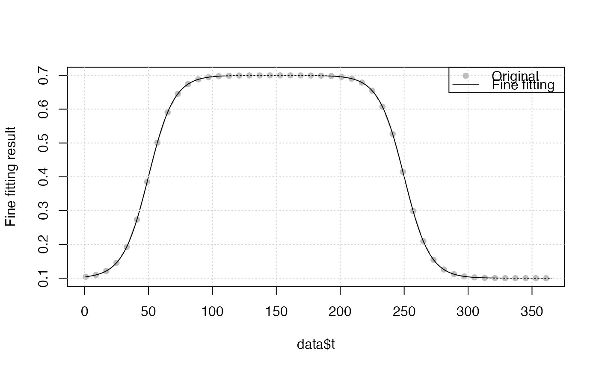

Fine curve fitting function is used to fit vegetation time-series in every growing season.
FitDL.Zhang(y, t = index(y), tout = t, method = "nlm", w, type = 1L, ...)
FitDL.AG(y, t = index(y), tout = t, method = "nlminb", w, type = 1L, ...)
FitDL.AG2(y, t = index(y), tout = t, method = "nlminb", w, type = 1L, ...)
FitDL.Beck(y, t = index(y), tout = t, method = "nlminb", w, type = 1L, ...)
FitDL.Elmore(y, t = index(y), tout = t, method = "nlminb", w, type = 1L, ...)
FitDL.Gu(y, t = index(y), tout = t, method = "nlminb", w, type = 1L, ...)
FitDL.Klos(y, t = index(y), tout = t, method = "BFGS", w, type = 1L, ...)input vegetation index time-series.
the corresponding doy(day of year) of y.
the time of output curve fitting time-series.
method passed to optimx or optim function.
weights
integer, 1 or -1
1: trough-to-trough curve fitting
-1: peak-to-peak curve fitting
other paraters passed to optim_pheno().
tout: The time of output curve fitting time-series.
zs : Smoothed vegetation time-series of every iteration.
ws : Weights of every iteration.
par : Final optimized parameter of fine fitting.
fun : The name of fine fitting.
Beck, P.S.A., Atzberger, C., Hogda, K.A., Johansen, B., Skidmore, A.K., 2006. Improved monitoring of vegetation dynamics at very high latitudes: A new method using MODIS NDVI. Remote Sens. Environ. https://doi.org/10.1016/j.rse.2005.10.021.
Elmore, A.J., Guinn, S.M., Minsley, B.J., Richardson, A.D., 2012.
Landscape controls on the timing of spring, autumn, and growing season
length in mid-Atlantic forests. Glob. Chang. Biol. 18, 656-674.
https://doi.org/10.1111/j.1365-2486.2011.02521.x.
Gu, L., Post, W.M., Baldocchi, D.D., Black, TRUE.A., Suyker, A.E., Verma,
S.B., Vesala, TRUE., Wofsy, S.C., 2009. Characterizing the Seasonal Dynamics
of Plant Community Photosynthesis Across a Range of Vegetation Types,
in: Noormets, A. (Ed.), Phenology of Ecosystem Processes: Applications
in Global Change Research. Springer New York, New York, NY, pp. 35-58.
https://doi.org/10.1007/978-1-4419-0026-5_2.
https://github.com/cran/phenopix/blob/master/R/FitDoubleLogGu.R
# simulate vegetation time-series
t <- seq(1, 365, 8)
par <- c(mn = 0.1, mx = 0.7, sos = 50, rsp = 0.1, eos = 250, rau = 0.1)
y <- doubleLog.Beck(par, t)
data <- data.frame(t, y)
# methods <- c("AG", "Beck", "Elmore", "Gu", "Zhang")
tout <- seq(1, 365, 1)
r <- FitDL.Elmore(y, t, tout)
plot(r, data)

get_GOF(r, data)
#> R2 NSE R RMSE pvalue n_sim
#> 1: 1 1 1 4.392087e-10 0 46
get_param(r)
#> # A tibble: 1 × 7
#> mn mx sos rsp eos rau m7
#> <dbl> <dbl> <dbl> <dbl> <dbl> <dbl> <dbl>
#> 1 0.100 0.600 50.0 0.100 250. 0.100 1.48e-11